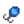
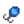

| Nivel 1
|
Nivel 2
|
Nivel 3
|
Nivel 4
|
Level 5
|
| Alcance de caña aumentado en una casilla.
|
 Cebo Cebo
|
 Trampa para cangrejos Trampa para cangrejos Plato de alta mar Plato de alta mar
|
 Cebo de lujo Cebo de lujo  Vivero de cebo Vivero de cebo Máquina recicladora Máquina recicladora
|
 Pescador Pescador
- Los peces valen un 25% más.
|
 Trampero Trampero
- Las trampas para cangrejos requieren menos recursos.
|
|
|
| Nivel 6
|
Nivel 7
|
Nivel 8
|
Nivel 9
|
Level 10
|
 CreaCebos Girador CreaCebos Girador Corcho trampa Corcho trampa Corcho sónar Corcho sónar
|
 Corcho ligero Corcho ligero Cazatesoros Cazatesoros
|
 Vividero de Cebo Deluxe Vividero de Cebo Deluxe Anzuelo punzante Anzuelo punzante Girador disfrazado Girador disfrazado
|
 Budín de espuma de mar Budín de espuma de mar Imán Imán
|
 Pesquero Pesquero
- Los peces valen un 50% más.
|
 Marino Marino
- Las trampas para cangrejos no atrapan basura.
|
 Pirata Pirata
- Probabilidad doble de encontrar tesoros.
|
 As del señuelo As del señuelo
- Las trampas para cangrejos no requieren cebo.
|